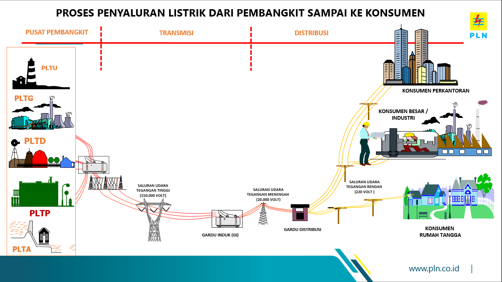

Informasi
Proses Penyaluran Listrik

Listrik adalah rangkaian fenomena fisika yang berhubungan dengan adanya aliran bermuatan listrik. Listrik juga merupakan kebutuhan hidup manusia yang sangat penting. jika tidak ada listrik, maka kebutuhan manusia sangatlah terbatas dan teknologi akan berkembang dengan sangat lambat. Listrik juga membutuhkan perjalanan yang sangat panjang dari pembangkit lIstrik menuju rumah kita. Berikut proses penyaluran dan pendistribusian listrik :
- Pembangkit Listrik
Listrik dihasilkan oleh generator di dalam pembangkit listrik. Pembangkit listrik Aaalah tempat untuk menghasilkannya energi listrik. Pembangkit listrik memiliki banyak jenis seperti PLTA,PLTU,PLTGU,PLTM,PLTPB,PLTB,PLTN,PLTS, dan lainnya. Untuk contoh pembangkit listrik kita ambil PLTA, cara kerjanya air yang telah di bendungan akan di alirkan melalui saluran pipa-Pipa khusus yang digunakan untuk menggerakkan turbin. Lalu, turbin yang bergerak akan menggerakkan sebuah generator. Setelah itu, generator yang bergerak akan menghasilkan energi listrik yang akan digunakan. Biasanya tegangannya bervariasi dari 6.000V-21.000V tergantung dari jenis pembangkitnya
- Saluran Transmisi
Energi listrik yang sudah dihasilkan, akan dinaikkan tegangannya dari 6.000V menjadi 500.000V oleh transformator step up.
Lalu, tegangan 500.000V akan disalurkan melalui SUTET(Saluran Udara Tegangan Ekstra Tinggi) untuk diteruskan menuju gardu induk lain.
Setelah Itu, tegangan akan diturunkan oleh transformator step down dari 500.000V menjadi 150.000V. Lalu, tegangan 150.000V akan disalurkan melalui SUTT(Saluran Udara Tegangan Tinggi) untuk diteruskan menuju gardu induk distribusi. Tegangan 150.000V digunakan untuk menyalakan mesin-mesin pabrik besar.
- Jaringan Distribusi
Tegangan 150.000V akan diturunkan oleh transformator step down menjadi 20.000V. Lalu, tegangan 20.000V akan disalurkan melalui JTM (Jaringan Tegangan Menengah) untuk didistribusikan menuju gardu-gardu induk distribusi.
Tegangan 20.000V digunakan untuk menyalakan mesin-mesin pabrik menengah. Setelah itu, tegangan akan diturunkan oleh transformator step down dari 20.000V menjadi 220V (Standar) atau 380V (Tidak Resmi). Lalu, tegangan 220V akan disalurkan ke rumah-rumah dan gedung-gedung perkantoran melalui JTR (Jaringan Tegangan Rendah).
Ini adalah perjalanan listrik
Pembangkit Listrik ===> SUTET ===> SUTT ===> JTM ===> JTR ===> Rumah
Copyright©2020 PT. PLN (Persero) UPB Sumbagsel